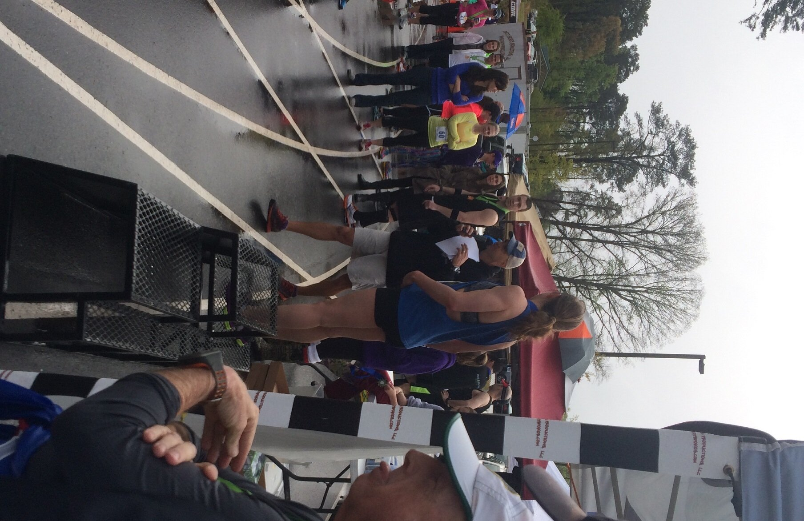
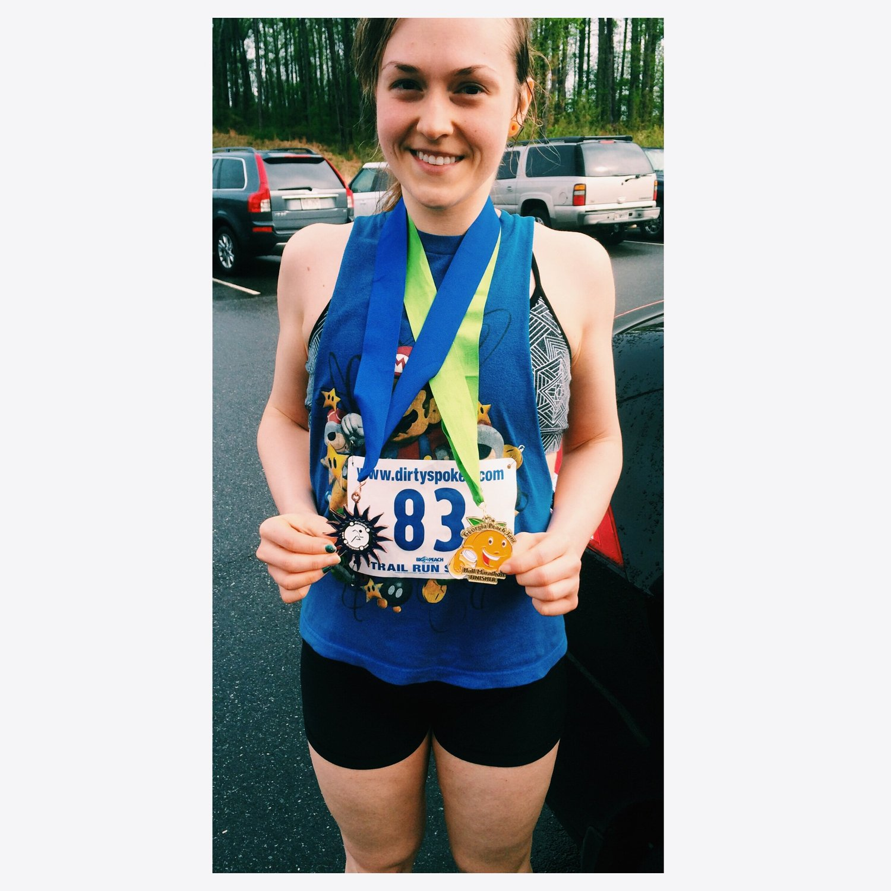

My First Half Marathon
This morning, I completed my first half marathon! Let me just begin by saying... I would never consider myself a runner. Until I signed up in January, I hadn't run over a mile in over a year. After I lost most of my weight through cardio, I fell in love with weightlifting and primarily stick to that. But. 2.5 years ago, when I decided to change my life, I also made a list of things I wanted to accomplish eventually. A "bucket list" I guess. One was to eventually complete a half marathon. I put it off because I preferred weight lifting. But a coworker organized a group of people to do a half marathon; I figured this was my best chance. I took it as a challenge. And today I finally accomplished it.I finished the 13.1 miles in 1:55:34, a 8:49 min/mile average pace. That placed me 3rd for females aged 20-25. This beyond exceeded my expectations. During training, I kept my pace at 10:00 min/mile and expected to finish 2:10:00... I didn't even consider placing.
Before the race, I was soo nervous. It was raining. It was cold. I had many issues with bursitis in my hips during training and was almost certain I would face some pain at some point during the race. I always trained in shorts, but I had anxiety over whether or not I should change into spandex pants since I was so cold. I kept the shorts on since I felt most comfortable in them and I'm so glad I did. We had to run through a few ankle-deep puddles... My shoes were soaked and I didn't need extra wet/cold/uncofortableness on my legs. Shorts for the winnnn.A follower from Instagram told me some valuable information that I repeated to myself throughout the race. The first 5 miles, run with your head. Don't just speed off with a ton of energy like many people do. You'd get tired. Pace yourself wisely. The next 5 miles, run with your legs. This is when you start to tire out and need to use your leg strength. The last 3 miles, run with your heart. Think about the finish and how bad you want it. This is exactly what I thought about and did throughout the race. Another close friend quoted Conan the Barbarian, so I also repeated that ahaha. Unexpectedly :p. "Crush your enemies! See them driven before you, and hear the lamentation of their women!" I didn't take the race too seriously, or his quote, but somehow this kept me going at points :p I couldn't help but giggle.
Around mile 5-6 I started to feel sick... Like vomit sick. This never happens. I read studies that prove beet juice improves endurance tremendously, so I juiced some beets to drink before my race. I began to think that was a bad idea and causing the nausea. I'm not sure. Regardless, I got over the sickness. Also, at mile 7 I had a Gu energy packet. When training, I found I got beyond exhausted after 9 miles. Not just leg pain, but like the energy was SUCKED out of me. Last week during my 12 mile run I decided to try a Gu packet mid-run, and I didn't experience the exhaustion. So I did this again for the race. It made such a difference.
The race was energizing. The cool air from the rain lifted my energy. I ran for fun. Every now and again at turn-around points I'd see coworkers and we'd encourage each other. It was very light-hearted and I just ran to run. Not for speed, just running. At around mile 9 I started to slow down I think. Or I felt I was at least. But I also noticed my time at this point, and realized... My pace is not the 10 min mile I expected... I am surpassing my expectations... this is incredible. And I kept running. The course was beautiful too. Besides the giant puddles... There were boardwalks scattered throughout the course that crossed over small swamps. So unique and beautiful. And for the most part the course was pretty flat! Also very nice.
It wasn't until mile 12.25 that I experienced the dreaded stomach cramps. I never have cramps. "Seriously?! Just 3/4 mile left and I have cramps?!" I slowed down a bit but just kept running and it resided.
The last 1/4 mile was on a race track. It's at this point I saw my boyfriend on the sidelines cheering me on. Additionally, a very meaningful song came on and I just lost it. I started bawling. Hyperventilating. My throat was closing in.... And I'm pretty sure people could hear. I had so many emotions come over me. How much I've changed in my life...from the 20 year old 185 pound girl that hated any form of activity. The girl with food issues. The girl who was so critical and pessimistic in her abilities. To the 22 year old fit girl. It still sounds weird to call myself that, but yes. I am fit and optimistic and believe in my abilities. The body acheives what the mind believes. I started to think about P.E. class in middle school. I dreaded the timed-mile day. To me, this meant embarrassment was in store for the day. We would have 16 minutes to complete the mile, or else we got a bad grade. For an academic overachiever, I'd cry every timed-mile day. I just. couldn't. finish in under 16 minutes. I was thinking about ALL of this in the last 1/4 mile and crying. I began to sprint. With every ounce of energy I was sprinting. Nearly puking, but sprinting :p And I crossed the finish line in 1:55:34.I actually couldn't stop running at first and it caused me pain. So I jogged in place next to my boyfriend until I calmed down a bit. Snagged a banana (okay three bananas :p), beef jerky, a clif bar, water..... And celebrated with my coworkers for all finishing the race. Since I placed, I got to go up on the winners podium (I don't even know what this is called...) and get a medal. Fun times.I am so happy that my hip pain NEVER occurred during the race. Even post-run, my hips are fine! I did take a Motrin before the race to keep the inflammation down; I think that the Motrin combined with the cool air helped a lot. I do have ankle pain now though and a bruise formed even before we made it home. So. Meh. Battle scars right? It'll heal.
Post-race my boyfriend and I met up with our two friends to eat Japanese Ramen. So many noodles were consumed on my end. So. Many. Noodles.
Still, I wouldn't consider myself "a runner". The race proved to me that I am an athlete, ready to take on any physical challenge. 

